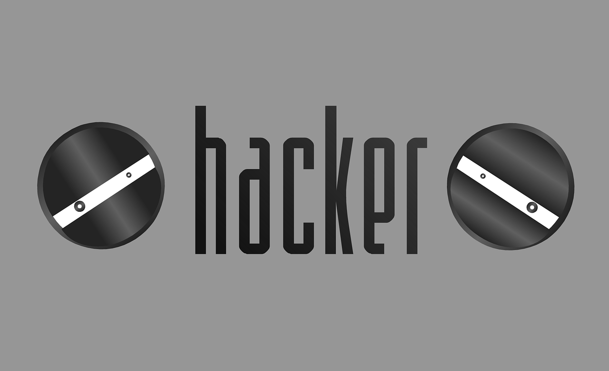

Ethical Hacking! -ABHINAV COWKUR,BITS HYDERABAD
 views for this article
views for this article
ETHICAL HACKING
What is Hacking?
What is Hacking?

Hacking is Gaining Unauthorized access to a system. During the 1990s, the term "hacker" originally denoted a skilled programmer proficient in Machine code and Computer Operating Systems. In particular, these individuals could always hack on an unsatisfactory system to solve problems and engage in a little software company espionage by interpreting a competitor's code.Unfortunately, some of these hackers also became experts at accessing password-protected computers, files, and networks and came to known as "crackers". Of course, an effective and dangerous "cracker" must be a good hacker and the terms became intertwined. Hacker won out in popular use and in the media and today refers to anyone who performs some form of computer sabotage.What is Ethical Hacking?Ethical hacking and ethical hacker are terms used to describe hacking performed by a Company or Individual to help identify potential threats on a computer or network. An ethical hacker attempts to bypass system security and search for any weak points that could be exploited by Malicious hackers. This information is then used by the Organization to improve the system security, in an effort to minimize or eliminate any potential attacks.
Different Types of Hackers:
There are mainly 3 different types of hackers. The White Hat, Black Hat and the Grey Hat.White Hat,Also known as Ethical hackers, White Hat hackers are the good guys of the hacker world. They'll help you remove a virus or do a Penetration Test on a company. Most White Hat hackers hold a college degree in IT security or computer science and must be certified to pursue a career in hacking. The most popular certification is the CEH (Certified Ethical Hacker) from the EC-Council.Black Hat-Also known as crackers,these are the men and women you hear about in the news. They find banks or other companies with weak security and steal money or credit card information. The surprising truth about their methods of attack is that they often use common hacking practices they learned early on.
Grey Hat,Nothing is ever just black or white, the same is true in the world of hacking. Grey Hat hackers don't steal money or information (although, sometimes they deface a website or two). They don't help people for good but they could if they wanted to. These hackers comprise most of the hacking world, even though Black Hat hackers garner most (if not all) of the media's attention.
One of the most Famous Hacks ever!:
The 2011 PlayStation Network outage was the result of an "external intrusion" on Sony's PlayStation Network services, in which personal details from approximately 77 million accounts were compromised and prevented users of PlayStation 3 and PlayStation Portable consoles from accessing the service. The attack occurred between April 17 and April 19, 2011, forcing Sony to turn off the PlayStation Network on April 20. On May 4 Sony confirmed that personally identifiable information from each of the 77 million accounts had been exposed. The outage lasted 23 days. At the time of the outage, with a count of 77 million registered PlayStation Network accounts.
Conclusion:
I conclude by saying that everybody should have certain knowledge about hacking so they can prevent themselves from being the victims. If you are interested in protecting a Company or an Organisation from Cyber Attacks, then learn Ethical hacking and become a White Hat hacker.
-ABHINAV COWKUR
BITS,HYDERABAD